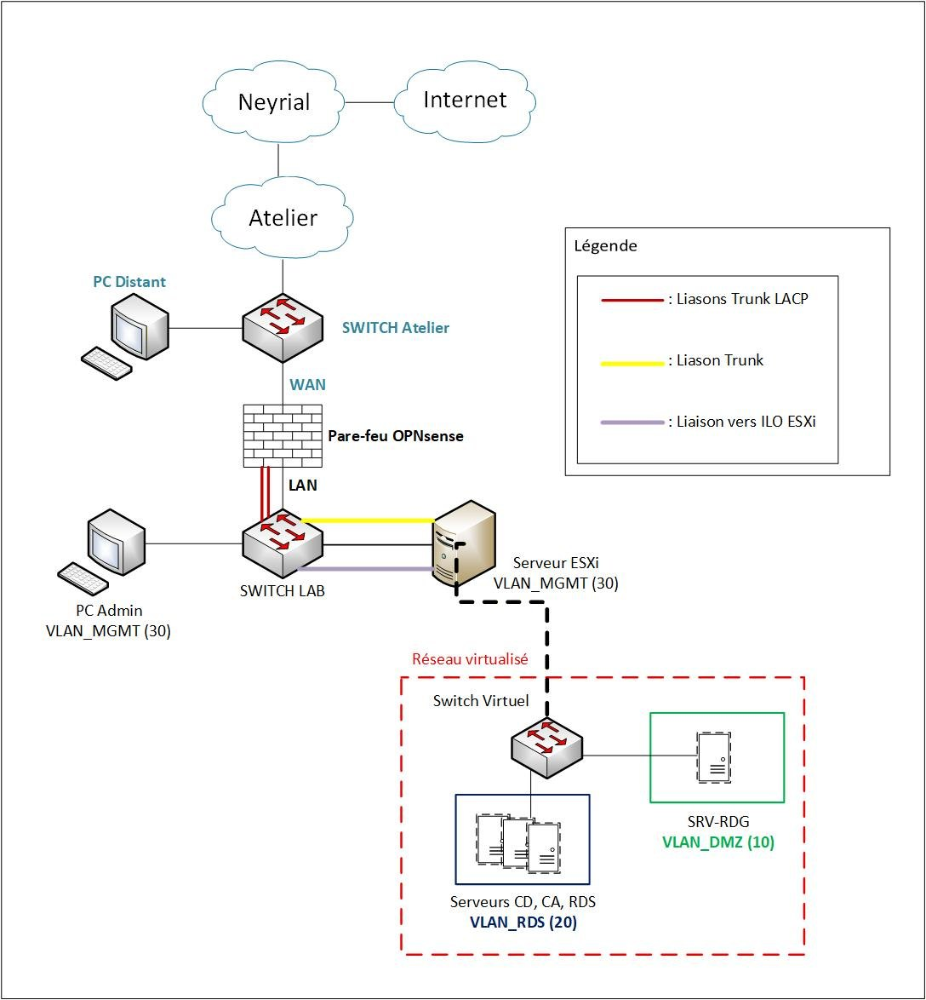

Stage de 2e année de BUT R&T, d'avril à juin 2026, chez Neyrial Informatique, une ESN de La Pardieu (Clermont-Ferrand) spécialisée dans l'hébergement, l'infogérance et la cybersécurité.
J'ai intégré le service RUN support/supervision (11 techniciens), qui traite les demandes d'assistance des clients et assure le maintien en condition opérationnelle de leurs infrastructures.
Un client souhaitait que ses salariés se connectent en Bureau à distance (RDP) avec une authentification par certificats, délivrés par une autorité de certification interne.
Son infrastructure étant critique, ma mission était d'abord de reproduire l'architecture dans un environnement de test (LAB) en atelier, pour valider chaque étape avant toute intervention en production.

Préparation du matériel et du réseau :
Déploiement de l'architecture RDS sur 4 serveurs Windows Server 2022 :
Le LAB a été monté et configuré de bout en bout : pare-feu, switch, hyperviseur et les quatre serveurs de l'architecture RDS.
En revanche, je n'ai pas réussi à mettre en place la connexion par carte à puce dans ce LAB, dont le matériel était limité. Faute de temps, la solution n'a donc pas pu être déployée chez le client avant la fin de mon stage.